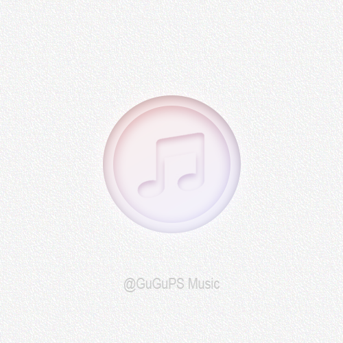

PS公开课一
一.图层的使用
1.图层混合选项 内阴影 投影
2.填充和不透明度的区别 到0时 填充还有框架 不透明就全没了
3.调整图层 亮度对比度 只对下面的图层有效
4.图层混合模式
a.变暗 保存深色
b.变亮 保存浅色和亮
c.柔光
d.中性 叠加 灰色去除 黑白做运算
5.按住“Alt + Ctrl”，同时选中图层，向上拖动即可快速复制图层。
6.筛选 文本 调整 取消筛选
7.图层锁定
二.渐变镂空音符
1.打开磨砂纸背景
2.画灰色圆
3.混合选项 距离5 上边多大的阴影 阻塞10% 阴影浓度 大小20阴影全体宽度 像是一个白色围棋子
4.复制一层 并缩小 做成按钮一样
5.复制音符,粘贴,调大小位置,锁定不透明度
6.画笔 10%灰 把音符画得看不出来 混合选项 内阴影 距离5 阻塞2 大小10
7.再画一个大圆,盖住全部图像,属性面板-形状细节-颜色-选渐变色,直接手调两个颜色做渐变 线性 120度 混合模式 叠加
8.边缘泛白,模糊处理 右键栅格化 滤镜 模糊 高斯模糊 制作影子 半径10像素

9.笔刷第四个灰度值 轻轻涂抹
10.添加文本

未完待续